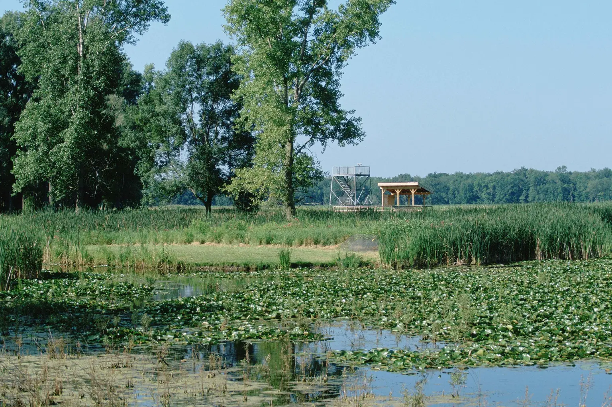

FINGER LAKES · WILDLIFE DAY
Montezuma National Wildlife Refuge With Kids: The Wildlife Drive Day That Stays Flexible
Start with the three-mile Wildlife Drive, give the kids two things to look for, and treat every trail as optional. Montezuma works because the day can shrink without feeling like a failure.

Why this works for a real family
Montezuma National Wildlife Refuge sits along NY-5/20 and NY-89 in the northern Finger Lakes, roughly an hour from much of the Syracuse area before traffic and your exact starting point. The core experience is a three-mile auto-tour route along the Main Pool. That gives a tired child, a grandparent or a family managing mobility limits a legitimate wildlife experience without committing everyone to a long trail.
The refuge is not one giant attraction with a mandatory sequence. The visitor center, Wildlife Drive, Seneca Trail, viewing tower and outlying overlooks are separate decisions. That is the advantage. Build the day around one strong loop, then add only what the family's energy and the weather support.
If your kids need a more controlled indoor payoff, use the Howe Caverns plan. If they want a short woodland trail with a nature center, compare the Beaver Lake day. Montezuma is best for patient looking, not constant stimulation.
The current facts that decide the day
- Refuge hours: the official page says refuge areas are generally open from one-half hour before sunrise to one-half hour after sunset.
- Wildlife Drive: the three-mile, one-way route is normally open April 1 through November 30, weather permitting. It is for vehicles only; no pedestrians or bicycles.
- Visitor center: normally open daily April 1 through November 30 from 10 a.m. to 3 p.m., weather permitting. Conditions and staffing can change.
- Restrooms: the official visit page says restrooms can be reached from the visitor-center parking lot near the large heron sculpture, including when the information desk is closed.
- Staying in the car: remain in the vehicle along the drive except at signed binocular stops. The car works as a wildlife blind and reduces disturbance.
- Trails: closures are seasonal. Seneca Trail is closed January 1 through August 31 for bald-eagle protection. Esker Brook and South Spring Pool trails close during part of hunting season.
- Pets: current refuge notices allow leashed dogs on Seneca Trail but prohibit dog walking on Esker Brook and South Spring Pool trails. Pick up waste and recheck the exact area before arrival.
- Fee: the refuge does not advertise a general entrance fee. A free visit still needs gas, food and a weather plan.
The family itinerary: a strong two-hour core
Arrival — restroom, map, two observation jobs
Park at the visitor center. Use the restroom before entering the drive; the route is short, but bird stops can stretch time. If the center is open, ask volunteers what has been seen and where. If it is closed, check the attached sun room and posted information.
Give each child only two jobs. One can count kinds of movement—swimming, wading, soaring, diving. The other can watch for three habitat layers: open water, reeds and trees. Specific missions prevent the back seat from becoming a running demand for a bald eagle.
Wildlife Drive — slow enough to see, not to block
Enter the one-way Wildlife Drive from the visitor-center lot. Keep moving through any signed sensitive area. Stop only where permitted, keep voices down and use binoculars from inside the vehicle when possible. Never feed wildlife, approach a nest or turn a bird sighting into a traffic problem.
Season controls what is visible. Waterfowl, marsh birds, raptors and mammals may appear, but no species is guaranteed. The official refuge page lists ducks, geese, herons, grebes, terns, gallinules, bitterns, bald eagles, osprey, northern harriers and several mammals as possibilities. Treat that list as habitat context, not a promise.
Route 89 decision — end well or add one overlook
The drive exits onto NY-89 rather than circling back to the same parking space. Before adding another stop, ask three questions: does everyone still want out of the car, is the wind or heat tolerable, and is the return clock comfortable? If yes, choose one current open overlook or short walk. If no, head for lunch or home. One extra stop is enough.
The short-walk option
When open, Seneca Trail begins near the visitor center and provides access toward a viewing tower over the Main Pool. Confirm the seasonal closure before promising it. Trail surfaces, insects, mud and sun exposure change with weather. Use the family bug-protection system and the sun-protection guide, but do not coat binocular eyecups or vehicle surfaces with repellent.
A child who has already spent an hour watching from the car may not want a walk. That is not wasted potential. The drive is a complete experience. Keep the trail as a bonus instead of using it to extract maximum value from a free day.
Food, gear and the no-buy version
Bring water and a compact lunch or plan a specific stop outside the refuge. Do not assume food service inside. Keep food secured, pack out trash and never use snacks to attract an animal. The day-trip cooler guide is enough for a simple car-base meal.
Useful gear is boring: water, weather layers, closed shoes, insect protection, a trash bag, paper and pencils, and any medication the family already needs. Binoculars help, especially one shared 8x pair, but they are not admission. The family binocular guide explains the fit tradeoffs. A phone camera and naked-eye observation are fine.
Weather, access and meltdown backups
Rain: light rain may improve the mood and reduce crowds, but poor visibility and muddy trails can erase the walking portion. Heat: the car can become dangerous quickly; use air conditioning while occupied and never leave a child or pet inside. Thunder: stay in a hard-topped vehicle or substantial building and postpone exposed overlooks.
No birds: switch from species hunting to habitat, tracks, clouds and sounds. Child is done: finish the one-way route without adding stops. Visitor center closed: use posted information, the restroom access described by the refuge, and the drive if it is officially open. Access needs: call the refuge before travel to confirm parking, restroom, visitor-center and trail conditions for the specific person. The auto route is the flexible core, not a guarantee that every facility is barrier-free.
Who should skip it
Skip Montezuma on a day when every child needs rides, touch exhibits or a guaranteed animal encounter. Skip the Wildlife Drive if someone cannot tolerate a slow one-way car route with limited exit options. Families with serious insect reactions should check current conditions and their medical plan. Anyone bringing a dog should verify where it is allowed and have a heat-safe alternative; leaving an animal in the car is not one.
Official check-before-you-go sources
Logistics were checked September 3, 2026. Refuge operations, trail closures and wildlife conditions can change.
- U.S. Fish and Wildlife Service: Montezuma National Wildlife Refuge
- USFWS: visiting, Wildlife Drive, trails and seasonal access
- USFWS: official refuge map
MAKE THE WEEKEND COUNT
Useful beats heroic.
Build the day your family can finish well, then leave enough energy for the ride home.
More family plans